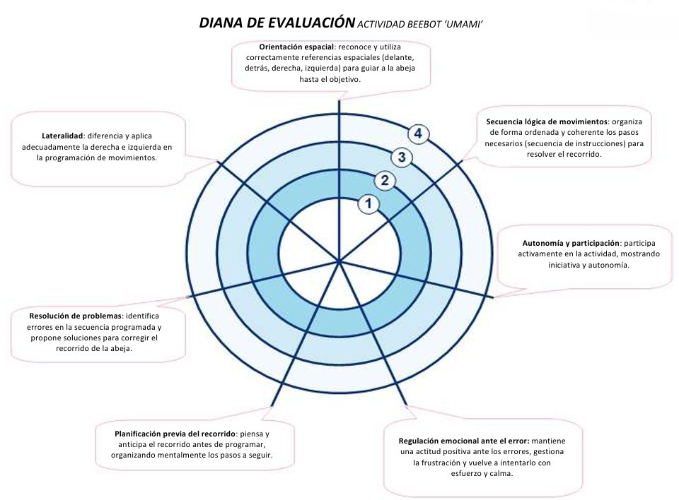
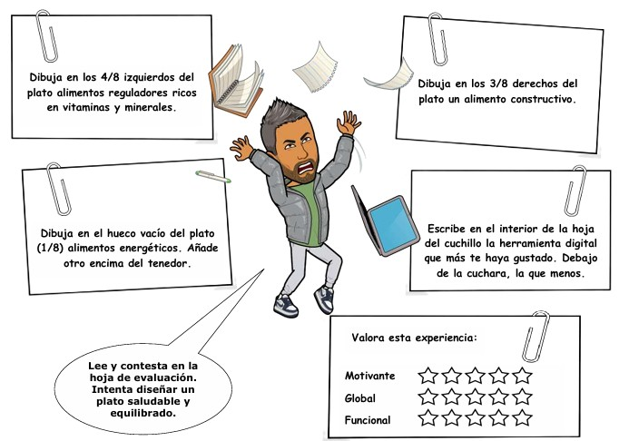

Diana de evaluación Bee-bot

A través de este instrumento de evaluación vamos a valorar fundamentalmente 3 aspectos: la
capacidad de ejecutar comandos para programar adecuadamente hasta llegar a la solución, la
organización espacial (relacionada con el área de Educación Física) y la inteligencia emocional
mediante la observación de cómo hacer frente al error. Además, de otros ítems evaluables que
se adjuntan en la propia diana.
En este caso los datos son recabados por el docente puntuando de 1 a 4 la aparición o no de
los ítems a observar (siendo 1 el de menor valor). Lo bueno de usar este método es que de un
vistazo podemos tener una estimación objetiva de la consecución de dichas prácticas
evaluables. Todo aquello que ofrezca como resultado una circunferencia estará más cerca de la
adquisición de dichas competencias.
Como variable y para fomentar la coevaluación se puede proponer la simplificación de ítems y
que sean los propios compañer@s quienes se encarguen de la recogida de datos.
Prueba escrita competencial

Es la actividad de evaluación del Paisaje de Aprendizaje ‘Umami’ `al uso´. A diferencia de otras
pruebas escritas, el valor competencial y la interdisciplinariedad con otras áreas. De hecho, E.F
y Conocimiento del Medio por su conexión con la salud van de la mano, pero añadimos las
fracciones de Matemáticas de una forma muy sutil. Al mismo tiempo, volvemos a reincidir en
el tema de la espacialidad.
Además de los datos evaluables más tradicionales asociados al conocimiento y la
competencialidad. Se apuesta por un feedback para el docente sobre qué herramientas tienen
mejor y peor aceptación, así como una valoración personal/emocional entorno a la experiencia
vivida con la realización de todo el producto final. Más que interesante, en mi opinión.
Las evidencias del conocimiento vienen determinadas por las calificaciones obtenidas que son
realmente notorias y significativas para todos.
Una posible variable sería integrarla como una prueba digitalizada, pero en este caso no quería
abusar de la tecnología y tener algo en papel...
Actividad Digital evaluable 'A simple vista'
Por último, enlazo una actividad evaluable realizada con `wordwall´. Sobre todo para dejar
constancia de la importancia de usar el juego como forma de evaluación. En esta ocasión. Se
trata de `aplastar´ aquellas conductas que identificamos como saludables. El simple hecho de
que sea en formato juego, de fácil entendimiento y dinámica y con posibilidad de realizar
tantas veces quieras (obviamente para superar tu ranking o el de tus compañer@s), hace que
este tipo de instrumento sea potentísimo a nivel de motivación e interés.
https://wordwall.net/resource/39681863